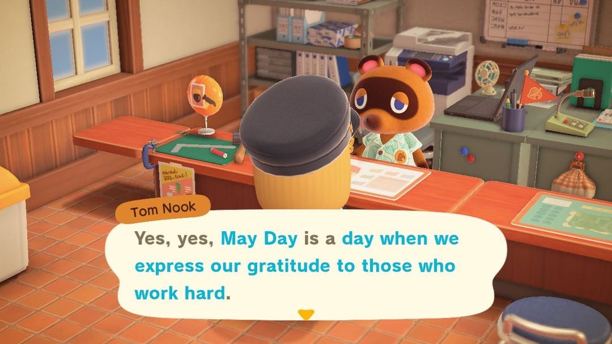
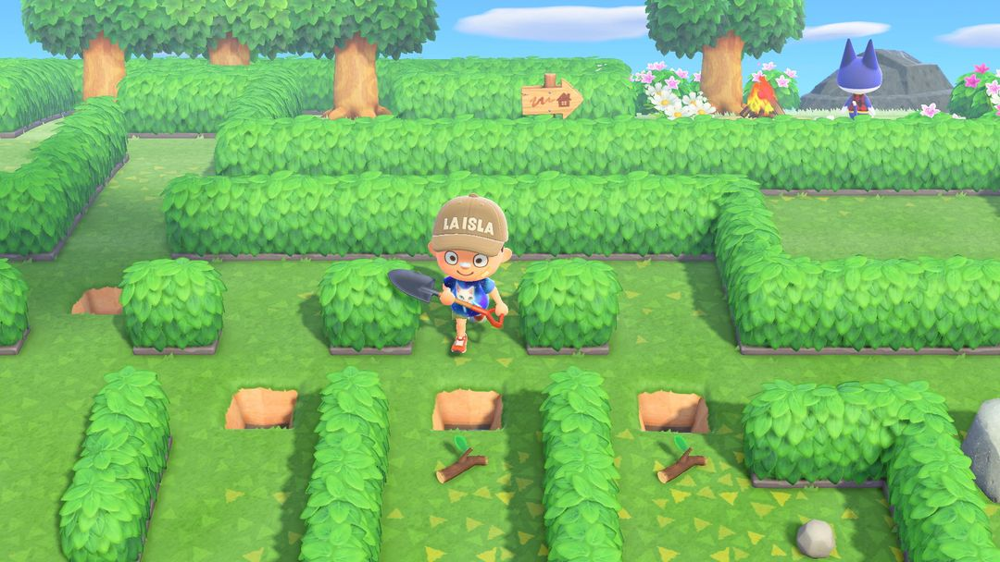
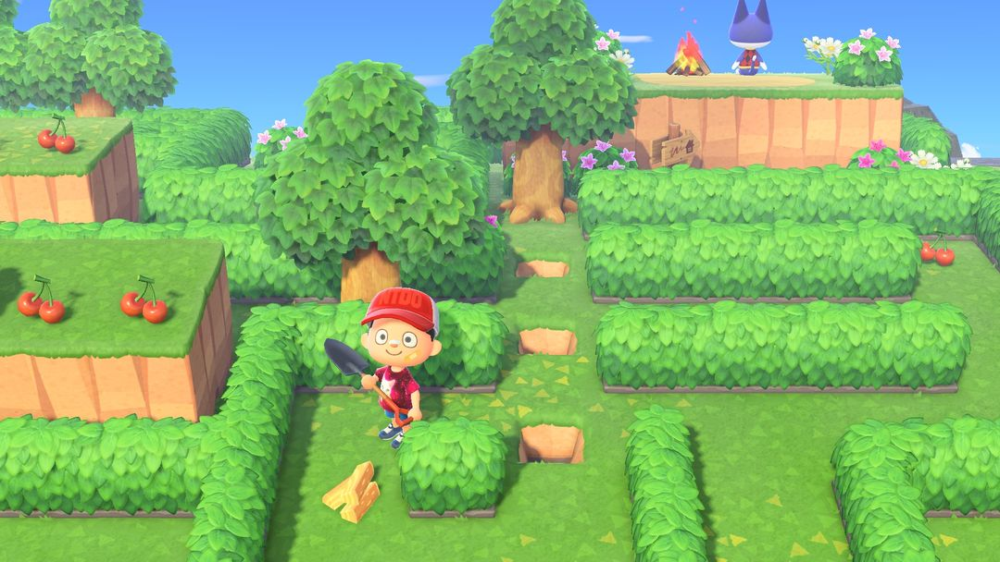
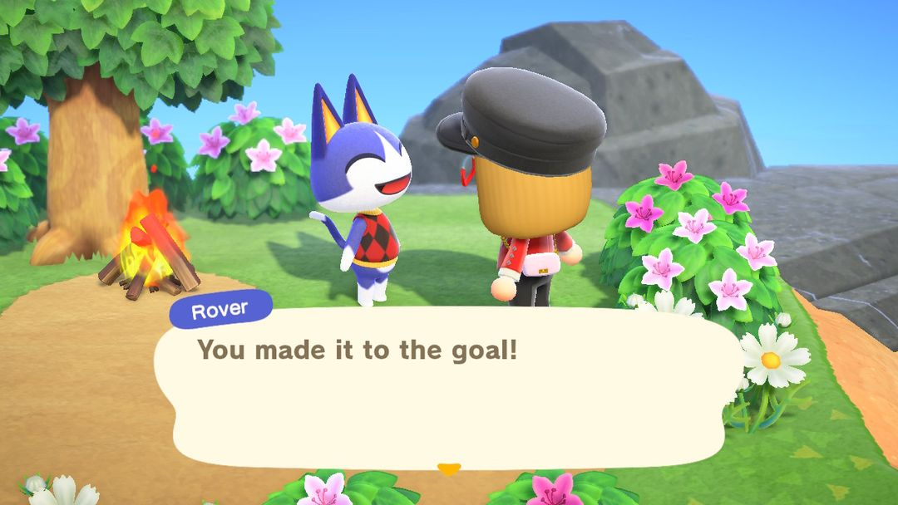

劳动节迷宫之旅：一张票，走到陌陌那里
每年 4 月 29 日到 5 月 7 日，一年只能走一趟
狸克说劳动节是感谢辛苦工作的人的日子，所以给每位岛民都安排了一趟旅行。目的地是一座用树篱围成的迷宫小岛，终点等着你的是陌陌，那只蓝紫色的猫。
这趟旅行每年 4 月 29 日到 5 月 7 日开放，南北半球一样，一年只能走一趟。上岛时口袋是空的，开路全靠迷宫里捡到的铲子、水果和材料，水果尤其要省着吃，不然走到一半就会被一棵树卡住。走到终点，第一次能拿到陌陌的包包，第二次是陌陌的照片，路上还能捡最多 9 张铃钱兑换券。不用提前准备什么，挑一天空闲的时候去就行，下面按出发、走迷宫、拿奖励的顺序说。

活动期间找服务处的狸克，他会介绍劳动节旅行（英文版画面）（图：Nookipedia）
01哪几天能去
日期是固定的：每年 4 月 29 日到 5 月 7 日，不跟着复活节变，也不分南北半球，年年都是这几天。
这 9 天里随便挑一天去都可以，不用抢第一天。只是走完回来，这一年就不能再去了，所以最好挑个不赶时间的日子，慢慢走。
02先找狸克，再找莫里
出发要跑两个地方：
1. 先去服务处找狸克，他会告诉你票已经替你订好了。
2. 再去机场找莫里，在柜台说要出发，就能坐上飞机。
3. 落地到了迷宫岛，口袋是空的，自己的工具一件都带不进去。
反过来也一样，迷宫岛上捡的东西一样都带不回来。真正能带回家的只有陌陌的礼物和铃钱兑换券，这两样会寄到你的信箱。
03迷宫怎么走
迷宫是用树篱围起来的，路上不时被树、石头、灌木拦住。拦路的东西各有各的开法。
灌木最好对付，拿铲子直接挖掉。
树和石头得先吃一个水果攒足力气，再拿铲子把树连根挖起，或者把石头敲碎。一个水果只够用一次，挖完一棵树、敲完一块石头，力气就用掉了。
快要坏掉的斧头只能砍一棵树，砍完就坏，留给最要紧的那棵。
半路上摆着一张朴素DIY作业台。迷宫里捡到的DIY手册先学会，材料凑齐了就在这里把工具做出来。
迷宫有两种布局，每年出哪种可能不同：
| 布局 | 特点 |
| 平地版 | 整座岛是平的，有些小水坑只能直着跳过去；要凑齐材料做一把斧头 |
| 悬崖版 | 有上下两层；要凑木材、硬木材、软木材做梯子，爬上悬崖 |

平地版：一路挖树开路（图：任天堂，转自 Nookipedia）

悬崖版：要做梯子爬上去，陌陌在右上角（图：任天堂，转自 Nookipedia）
注意走错了路、水果不够了，或者被卡在哪儿出不去，就打开手机里的「紧急逃脱服务」，花 100 里数被送回起点，整个迷宫重置重来。岛上捡的东西会被清掉，已经拿到的陌陌的礼物不受影响。
04能拿到什么
走到终点，陌陌会送你一份礼物，第几次走到决定送什么。另外迷宫里还散着铃钱兑换券，其中一部分藏在石头后面，得多花点力气。
| 东西 | 怎么拿 |
| 陌陌的包包 | 第一次走到终点 |
| 陌陌的照片 | 第二年再走到终点 |
| 铃钱兑换券 | 终点附近 4 张，岛边 3 块石头后面还有 5 张 |
礼物和兑换券都是第二天寄到信箱，当天回岛后口袋里看不到别着急。铃钱兑换券一张能卖 3,000 铃钱，9 张全拿到一共 27,000 铃钱。
05走之前想清楚的几件事
水果别乱吃。岛边那 5 张兑换券被 3 块石头挡着，得留着水果才敲得开。每挖一棵树之前，先想想这棵是不是非挖不可。
先看清再动手。迷宫不大，先绕着走一圈，看清哪棵树真挡路、哪块石头后面藏着东西，再决定水果用在哪。
捡到DIY手册先学会。梯子、斧头的DIY手册都藏在迷宫里，不学会就做不出来，捡到了先翻开学上。
回来再找一趟狸克。他会夸你一句，这一年的旅行就算正式结束了。

走到终点，陌陌在篝火旁等你（英文版画面）（图：Nookipedia）
06这几年改过什么
劳动节是 2020 年 1.2.0 加进来的，那时候日期是 5 月 1 日到 7 日，也只有平地版一种。2021 年的 1.10.0 把开始日提前到 4 月 29 日，换上了悬崖版，加了陌陌的照片，礼物和兑换券也改成第二天寄。2.0 起两种布局都会出，看年份。3.0 没有再改。
动森圈圈 · 小程序和 iOS App 都搜「动森圈圈」